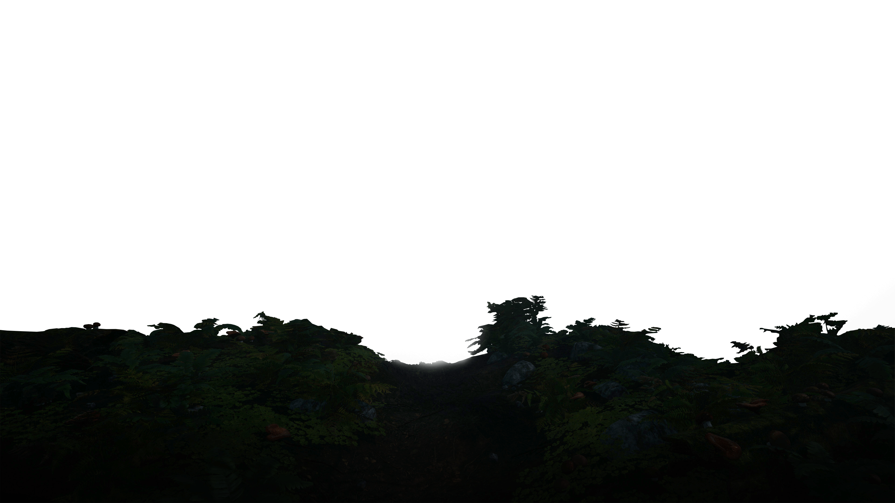
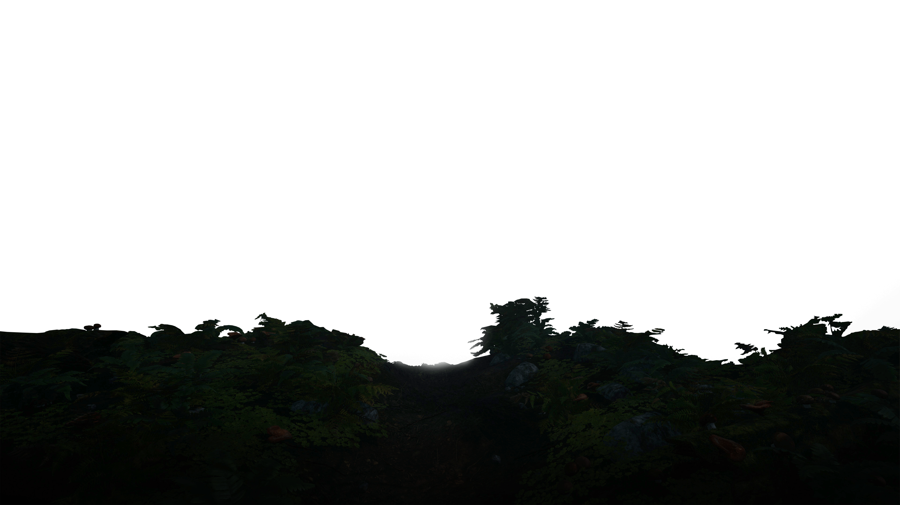

To be continued
It's easy to make something variable. The trick is to measure the duration of constancy.
© WebSearshProject
 

It's easy to make something variable. The trick is to measure the duration of constancy.
© WebSearshProject